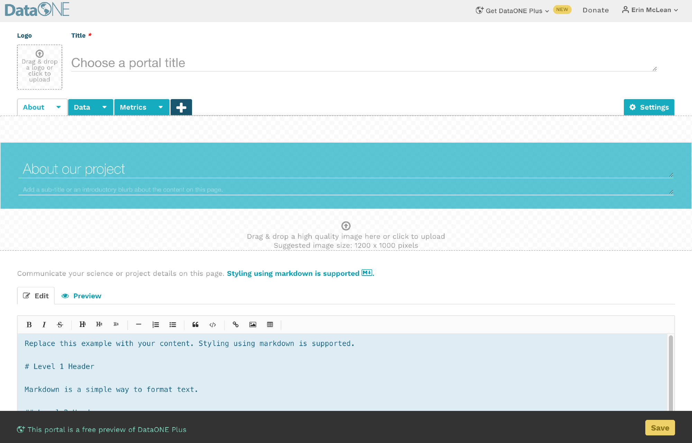
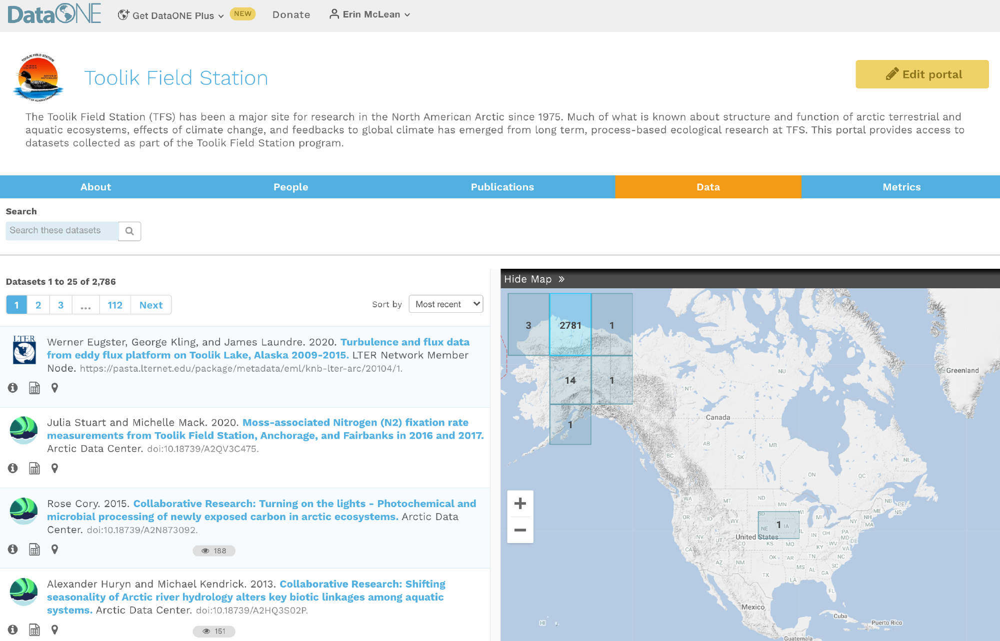
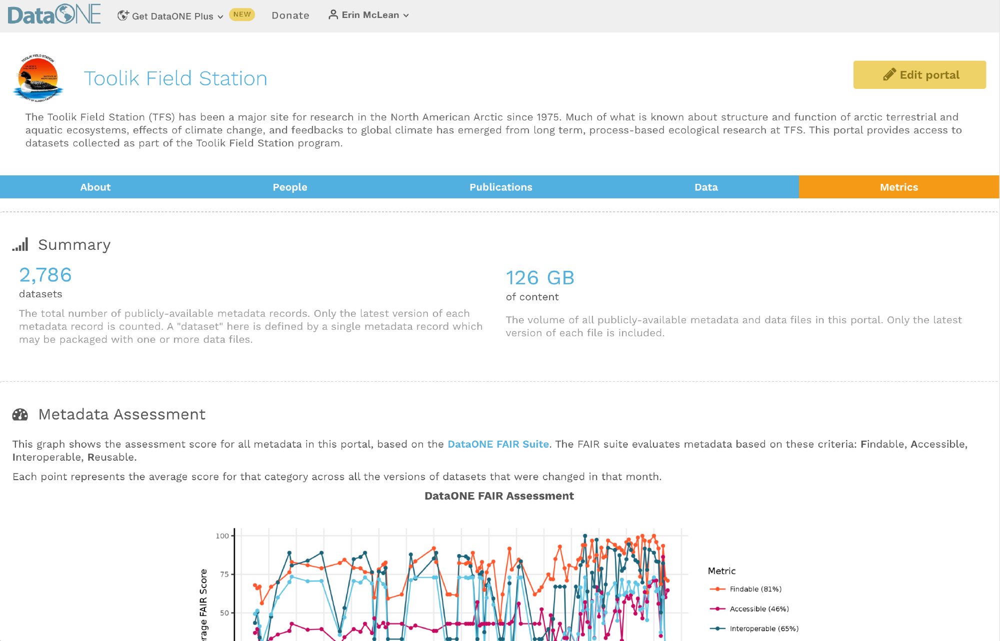
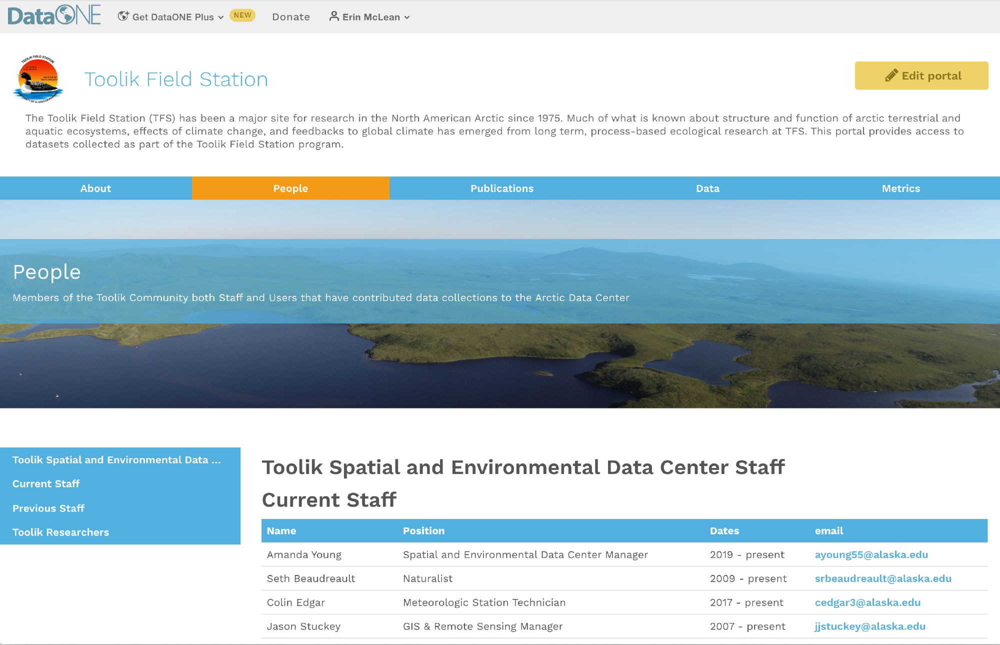
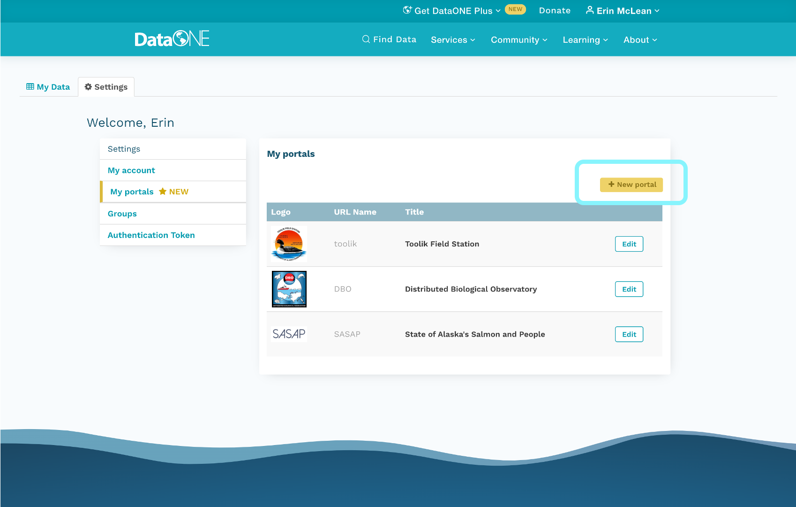
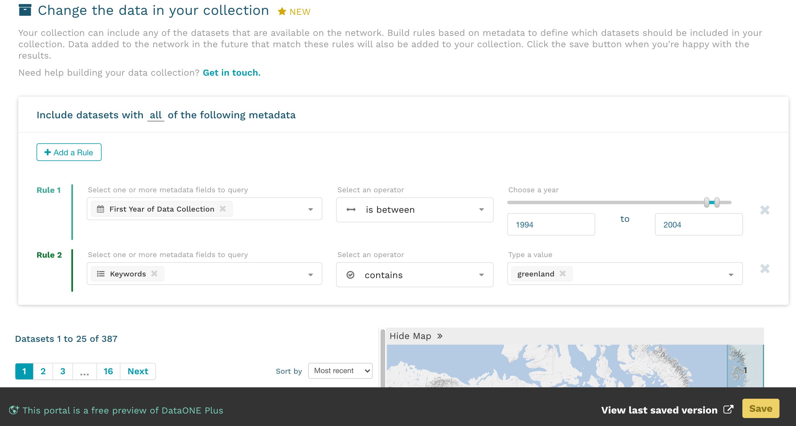

16 Session 16: Additional Resources
16.1 Creating a data portal
Data portals are a new feature available through DataONE. Researchers can easily view project information and datasets all in one place across the federated network of repositories.
16.1.1 What is a Portal?
A portal is a collection of DataONE federated repository data packages on a unique webpage.
Typically, a research project’s website won’t be maintained beyond the life of the project and all the information on the website that provides context for the data collection is lost. Portals can provide a means to preserve information regarding the projects’ objectives, scopes, and organization and couple this with the data files so it’s clear how to use and interpret the data for years to come. Plus, when datasets are scattered across the repositories in the DataONE network, portals can help see them all in one convenient webpage.
Portals also leverage DataONE’s metric features, which create statistics describing the project’s data packages. Information such as total size of data, proportion of data file types, and data collection periods are immediately available from the portal webpage.
16.1.2 Portal Uses
Portals allow users to bundle supplementary information about their group, data, or project along with the data packages. Data contributors can organize their project specific data packages into a unique portal and customize the portal’s theme and structure according to the needs of that project.
Researchers can also use portals to compare their public data packages and highlight and share them with other teams, as well as the broader research audience.
To see some example of what portals could look like, view the Toolik Field Station, Ecoblender Lab and SASAP portals.
16.1.3 Portal Main Components
Portals have five components: an about page, a settings page, a data page, a metrics page, and customizable free-form pages.
16.1.3.1 About Page
This page is the first page users will see after initially creating a new portal, and it is highly recommended that users use this feature to create a description for their portal. Add a picture of your logo, a title and description of your portal, and freeform text using the markdown editor.

16.1.3.2 Settings Tab
On the settings tab, users can give the portal a title and assign it a unique url; also referred to as a portal identifier. Users can add a general description of the portal, upload an icon photo for their data, and upload icon photos from any partner organizations that have contributed to the data. These partner icons will appear in the footer banner on every page in a portal, likewise your portal icon will appear in the header banner.

Every DataONE portal URL will follow this format:
https://search.dataone.org/portals/portal_identifier
16.1.3.3 Data Page
The data page is the most important component of the DataONE portal system. This is where users will display the data packages of their choice. It looks and performs just like the main DataONE user interface.

16.1.3.4 Metrics Page
Unlike the first two pages, the metrics page cannot be edited or customized. It is a default feature that provides the following information about the data packages within a portal:
- The total number of publicly-available metadata records
- The volume (in bytes) of all publicly-available metadata records and data files
- The most recent date the datasets were last updated (metadata and data are treated separately)
- The file types of all publicly-available data
- The years in which data was collected, regardless of upload date

Please contact DataONE’s support team at support@dataone.org about any questions or concerns about the metrics page.
16.1.3.5 Freeform Pages
Freeform pages are an optional function provided by DataONE portals. Here, users can add as much supplementary information as needed using markdown.
16.1.3.5.1 Example Freeform Pages
Below are two examples of ways users can take advantage of portal freeform pages to tie unique content together with their data packages. Users can add as many tabs as needed.


The examples shown on this page are from the Toolik Field Station’s portal; visit this portal to explore its contents further.
16.1.4 Creating Portals
A step-by-step guide on how to navigate DataONE and create a new portal.
Video tutorials on how to create your first portal from the Arctic Data Center, a repository within the DataONE network.
16.1.4.1 Getting Started with Portals
If you are on DataONE’s primary website, click on your name in the upper right hand corner when you are signed in to DataONE with your ORCID. A dropdown will appear, and you would select “My Portals.”

On your profile settings page, select ‘My Portals.’ After the page loads select the yellow button ‘+ New Portal’ to add a new portal, you’ll automatically be directed to a fresh edit session.

16.1.4.2 Portal About and Settings Page
In a new edit session, the first thing you’ll see is the about page where you’ll be able to add details about your project page.
On the settings tab, you’ll set the basic elements of your portal:
Portal title
Unique portal identifier
- This identifier will be used to create the portal URL. If the name is available, a label will indicate it’s available and if the name is taken already, it will note that the name is already taken. This feature ensures the portals are unique.
Portal description
Partner organization logos

Adding collaborators to help you create your portal is as straightforward as copying and pasting in their ORCID into the box below the permissions section. You can choose whether the collaborator can view, edit, or is an owner of the portal. You can have multiples of each role.

16.1.5 Adding Data to Portals
Video tutorials on using portal search filters from the Arctic Data Center
Navigate to the ‘Data’ tab. In order to populate a portal with the data packages applicable to your needs, you will need to define the search results using the rule options on the top of the page. You can create a rule with any of the metadata fields that DataONE supports, and customize that rule by selecting an operator (like equals, does not equal, or is greater than) the value you select.


You can create more than one rule, and use the selctor at the top to stipulate whether you want your portal to follow ALL of the rules you’ve specified or ANY of the rules.
 When you’ve selected the data you want, hit the green save button in the bottom right.
If you need assistance assembling portal data using a complex query, please contact the DataONE Support Team.
16.1.5.1 Data Package Metrics
As stated in Portal Main Components, the metrics page is a default function provided by DataONE. This page cannot be edited and cannot be viewed while editing. Users do have the option to delete the page if they’d like. To delete the page, select the arrow next to the word “Metrics” in the tab and choose “Delete” from the dropdown list.
To see metric summaries, navigate to your portal in view mode. See Saving and Editing Portals for more information on how to view portals.

Please contact the DataONE Support Team about any questions or concerns about the metrics page.
16.1.6 Creating Unique Freeform Pages
Video tutorials on creating freeform pages from the Arctic Data Center
To add a freeform page to a portal, select the ‘+’ tab next to the data and metric tabs and then choose the freeform option that appears on screen. A freeform page will then populate.
Easily customize your banner with a unique image, title, and page description. To change the name of the tab, click on the arrow in the ‘Untitled’ tab and select ‘Rename’ from the dropdown list.

Below the banner, there is a markdown text box with some examples on how to use the markdown formatting directives to customize the text display. There is also a formatting header at the top to assist if you’re unfamiliar with markdown. As you write, toggle through the Edit and Preview modes in the markdown text box to make sure your information is displaying as intended. Portals are flexible and can accommodate as many additional freeform pages as needed.
The markdown header structure helps to generate the table of contents for the page.
Please see these additional resources for help with markdown:
- Markdown reference
- Ten minute tutorial
- For a longer example where you can also preview the results, checkout the Showdown Live Editor
16.1.7 Saving and Editing Portals
Be sure to save your portal when you complete a page to ensure your progress is retained.

Whenever a portal is saved, a dialogue box will pop up at the top of the page prompting users to view their private portal in view mode. You can choose to ignore this and continue editing.

To delete a page from your portal, select the arrow in the tab and choose ‘Delete’ from the dropdown.

Users can view and edit their portal from their ‘My Portals’ tab.
First, click the arrow your name in the top-right corner to drop down your menu options. Then, select ‘My Portals’ from the dropdown underneath your name. See the section on Getting Started with Portals for more details.


Click on the portal title to view it or select the edit button to make changes.
16.1.8 How to Publish Portals
New portals are automatically set to private and only visible to the portal creator. The portal will remain private until the owner decides to make it public.
To make your portal public, go into the settings of your portal. Under the description, you’ll see a new section called ‘Sharing Options.’ You can toggle between your portal being private and your portal being public there.

16.1.9 Sharing Portals
In order to share a published portal, users can simply direct recipients to their unique identifier. Portal identifiers are embedded into DataONE’s portal URL: https://search.dataone.org/portals/portal-identifier
To view or edit your portal identifier, go into edit mode in your portal. In the settings page, your portal URL will be the first item on the page.

Challenge
Develop a portal within DataONE, pulling together data related to your research, a topic of interest, or products from a research group or organization.
- Build a data query to create a meaningful subset of the DataONE collection
- Use your markdown skills to create an informative About page
- Consider adding links and embedding images or figures from publicly accessible datasets.
16.1.10 Tutorial Videos
For video tutorials on how to create your first portal visit resources on the Arctic Data Center video tutorial page.
16.1.11 Acknowledgements
Much of this documentation was composed by ESS-DIVE, which can be found here.